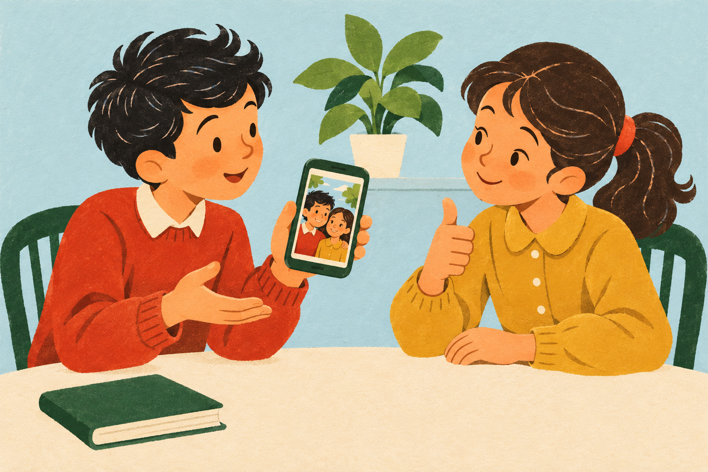

Online
Uma fotografia muito engraçada. Para quem?
Tens uma fotografia engraçada de um amigo e queres publicá-la num grupo.
O que fazes antes de partilhar?
Resultado
Errado neste caso.
Mesmo entre amigos, a pessoa pode não querer a fotografia a circular.
Certo.
Assim, a pessoa pode escolher o que acontece à sua imagem.
Errado neste caso.
Avisar depois não lhe dá oportunidade de decidir antes da partilha.
A solução comum às três escolhas
Pergunta antes de publicar e respeita a resposta. Uma imagem num grupo também pode ser guardada ou partilhada noutros lugares.

Um pequeno gesto para experimentar
Pergunta: "Posso partilhar esta fotografia neste grupo?"